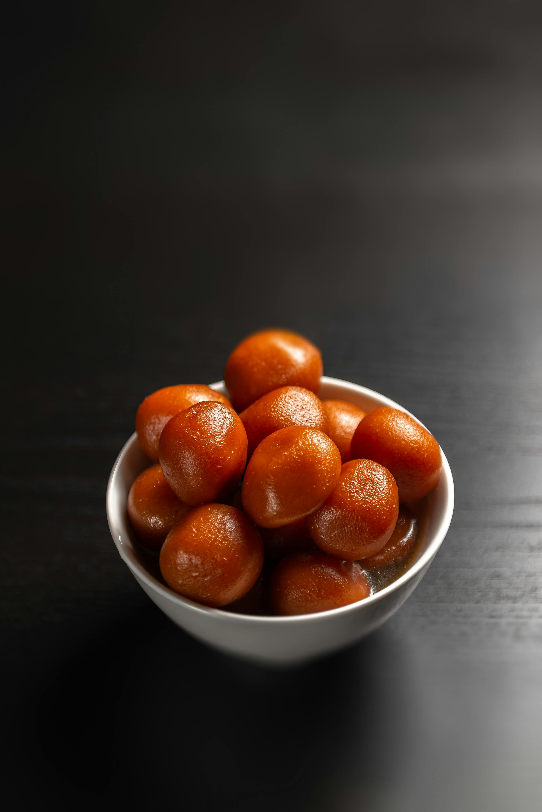

Home

Description
Gulab Jamun is a classic Indian dessert made from soft, deep-fried milk-based dough balls soaked in fragrant sugar syrup. It’s loved for its rich sweetness and melt-in-the-mouth texture.
Often served warm during festivals, celebrations, or special occasions, gulab jamun is a beloved treat across India and around the world. Its golden-brown color and sugary aroma make it as visually appealing as it is delicious.
Ingredients
- 1 cup milk powder
- 1/4 cup all-purpose flour (maida)
- 2 tablespoons ghee or clarified butter
- 1/4 cup milk (adjust to make dough)
- Oil or ghee for deep frying
- 1 cup sugar
- 1 cup water
- 4–5 cardamom pods, crushed
- Few strands of saffron (optional)
- Rose water or kewra essence (optional, for flavor)
Steps
- In a bowl, mix milk powder, all-purpose flour, and ghee. Gradually add milk to form a soft, smooth dough. Let it rest for 5–10 minutes.
- Divide the dough into small, smooth balls, ensuring there are no cracks.
- Heat oil or ghee in a deep pan over low to medium heat. Fry the balls slowly, stirring gently, until they turn golden brown. Remove and drain on paper towels.
- In a separate pan, prepare sugar syrup by boiling sugar and water together until sugar dissolves. Add crushed cardamom, saffron, and rose water/kewra if using.
- Place the fried gulab jamun balls into the warm sugar syrup and let them soak for at least 30 minutes to absorb the sweetness.
- Serve warm or at room temperature, garnished with chopped nuts if desired.